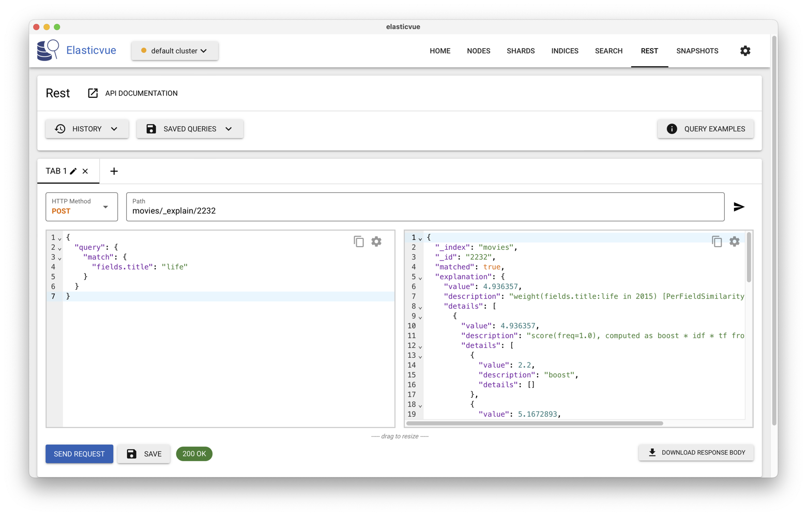

ElasticSearch - Travaux pratiques¶
Ce chapitre est consacré l’interrogation d’une base Elasticsearch, en utilisant le DSL (Domain Specific Language) dédié à ce moteur de recherche. Il est conçu dans une optique de mise en pratique: vous devriez disposer d’un serveur installé avec Docker et de l’application ElasticVue (reportez-vous au chapitre Recherche approchée).
Nous allons utiliser une base de films plus large que celle que l’on a vue en cours. Récupérez un fichier contenant environ 5000 films, au format JSON : http://b3d.bdpedia.fr/files/big-movies-elastic.json.
Vous pouvez importer avec ElasticVue en faisant des copier/coller. Autre
possibilité: appeler directement le service _bulk avec curl.
Dans le dossier où vous avez récupéré le fichier, lancez la commande de
chargement dans ElasticSearch suivante (ajoutez login et mot de passe):
curl -s --cacert http_ca.crt -U elastic:mot_de_passe https -X POST http://localhost:9200/_bulk/ --data-binary @big-movies-elastic.json
Dans l’interface Elasticvue, vous devriez voir apparaître un index appelé movies contenant 5000 films. Les documents ont la structure suivante :
{
"fields": {
"directors": [
"Joseph Gordon-Levitt"
],
"release_date": "2013-01-18T00:00:00Z",
"rating": 7.4,
"genres": [
"Comedy",
"Drama"
],
"image_url": "http://ia.media-imdb.com/images/M/MVNTQ3OQ@@._V1_SX400_.jpg",
"plot": "A New Jersey guy dedicated to his family, friends, and church,
develops unrealistic expectations from watching porn and works to find
happ iness and intimacy with his potential true love.",
"title": "Don Jon",
"rank": 1,
"running_time_secs": 5400,
"actors": [
"Joseph Gordon-Levitt",
"Scarlett Johansson",
"Julianne Moore"
],
"year": 2013
},
"id": "tt2229499",
"type": "add"
}
S1: recherche plein texte avec ElasticSearch¶
Le DSL est un langage extrêmement riche. Nous avons déjà vu les recherches « exactes » dans le chapitre Recherche exacte. Nous nous concentrons sur les recherches plein-texte (avec classement donc) et quelques opérations de combinaison. La documentation officielle est ici: https://www.elastic.co/guide/en/elasticsearch/reference/current/full-text-queries.html.
Les recherches plein-texte¶
On s’intéresse ici aux recherches portant sur des champs
textuels analysés (et ayant donc fait l’objet de transformations,
cf. le chapitre Recherche approchée). La correspondance
entre le texte indexé et celui de la requête est
exprimée par un score.
Reprenons la requête qui cherche les occurrences de Star Wars
avec l’opérateur match
{
"query": {
"match": {
"title": "Star Wars"
}
},
"fields": [
"title", "summary"
],
"_source": false
}
Cette fois, contrairement à ce qui se passait avec term,
les transformations sont appliquées au document et à
la requête, et le résultat correspond aux principes de la recherche plein texte
avec classement.
Vous pouvez constater que la requête est triée sur le
score (attribut _score dans chaque élément du résultat).
Prenez le temps de comprendre (au moins intuitivement)
le rapport entre le titre du film et son classement.
Il faut bien réaliser que chaque terme est pris en compte
individuellement. Cherchons par exemple les résumés
de film qui contiennent Roman Empire.
{
"query": {
"match": {
"summary": "Roman Empire"
}
},
"fields": [
"title", "summary"
],
"_source": false
}
On obtient des résumés qui contiennent Roman et Empire,
Roman tout seul et Empire tout seul: la
différence est reflétée dans le score, et donc dans le classement.
Remplacez match par match_phrase, comparez les résultats
et reportez-vous à la documentation pour comprendre.
Enfin il est possible d’effectuer une recherche plein-texte moins
« structurée » avec l’opérateur query_string dont
le paramètre est une liste de mots-clé enrichis de connecteur
booléens et d’options. Cette liste est l’équivalent (en plus puissant)
de l’approche habituelle avec les applications de recherche, consistant
à mettre en vrac les termes principaux de la recherche. Voici un
premier exemple.
{
"query": {
"query_string": {
"query": "(DiCaprio) OR (Deneuve)"
}
},
"fields": ["title"],
"_source": false
}
Et un second exemple un peu plus élaboré:
{
"query": {
"query_string": {
"query": "year:[1990 TO 2010] AND director.last_name:Tarantino"
}
},
"fields": ["title"],
"_source": false
}
Reportez-vous à la documentation pour les très nombreuses options (qui reprennent en fait celles du langage du système d’indexation sous-jacent, Lucene).
Combinaison de recherches¶
On peut combiner plusieurs recherches en paramétrant la manière dont les critères de recherche et les scores se combinent. Nous allons nous limiter ci-dessus aux combinaisons booléennes. La documentation (https://www.elastic.co/guide/en/elasticsearch/reference/current/query-dsl-bool-query.html) donne des informations plus complètes.
Les recherches booléennes sont exprimées par des objets (au sens JSON) bool
dans l’object query. Cet objet bool peut lui-même
avoir plusieurs sous-clauses: must, should, must_not
et filter. Voyons quelques exemples.
La clause must¶
L’objet must est un tableau de recherches plein-texte ou exactes,
et s’interprète comme un ET logique (ou, en termes ensemblistes,
comme une intersection des résultats). Voici un exemple
d’une requête des films dont le titre est proche de Star Wars et
qui sont parus
entre 1970 et 2000. On combine un match et un range.
{
"query": {
"bool": {
"must": [
{
"match": {"title": "Star Wars"}
},
{
"range": {"year": {"gte": 1970,"lte": 2000} }
}
]
}
}
}
Et oui, la syntaxe devient un peu compliquée… Si on
utilise should à la place de must, on obtient
une interprétation disjonctive OR (et donc
une union des résultats). À vous de vérifier (vous pouvez aussi
trouver un exemple plus intéressant, comme les films
tournés soit par Q. Tarantino soit par J. Woo.).
Enfin le must_not correspond au NOT. On peut donc construire
des expressions booléennes complexes, au prix d’un syntaxe
il est vrai assez lourde. Un exemple: les films
avec Bruce Willis, sauf ceux tournés par Q. Tarantino.
{
"query": {
"bool": {
"must":
{
"match": {"actors.last_name": "Willis"}
},
"must_not":
{
"match": {"director.last_name": "Tarantino"}
}
}
}
}
Je vous laisse étudier la clause filter qui sert principalement
à exclure des documents du résultat sans inflluer sur le score.
Vous pouvez limiter la quantité d’informations qui se trouvent dans le champ
_source de chacun des résultats comme ceci :
{
"_source": {
"includes": [
"*.title",
"*.directors"
],
"excludes": [
"*.actors*",
"*.genres"
]
},
"query": {
"match": {
"fields.title": "Star Wars"
}
}
}
À vous de jouer¶
Cette section suppose un investissement de votre part pour comprendre et expérimenter le langage d’Elastic Search. Elle est optionnelle dans le cadre de l’UE NFE204 pour laquelle on ne vous demandra pas de connaître la syntaxe d’un système particulier. À faire donc uniquement si vous souhaitez approfondir le sujet.
Proposez des requêtes pour les besoins d’informations suivants (vous pouvez aussi proposer des variantes « exactes »):
Films “Star Wars” dont le réalisateur (directors) est “George Lucas” (requête booléenne)
Correction
{ "query": { "bool": { "should": [ { "match": { "fields.title": "Star Wars" } }, { "match": { "fields.directors": "George Lucas" } } ] } } }
Pour une recherche exacte :
{ "query": { "bool": { "should": [ { "match_phrase": { "fields.title": "Star Wars" } }, { "match": { "fields.directors": "George Lucas" } } ] } } }
Variante :
{ "_source": { "includes": [ "*.title" ], "excludes": [ "*.actors*", "*.genres", "*.directors" ] }, "query": { "bool": { "should": [ { "match": { "fields.title": { "query": "Star Wars", "operator": "and" } } }, { "match": { "fields.directors": { "query": "Georges Lucas", "operator": "and" } } } ] } } }
ou
_search?q=fields.title:Star+Wars directors:George+LucasFilms dans lesquels “Harrison Ford” a joué
Correction
{ "query": { "match": { "fields.actors": "Harrison Ford" } } }
ou
_search?q=fields.actors:Harrison+FordFilms dans lesquels “Harrison Ford” a joué dont le résumé (plot) contient “Jones”.
Correction
{"query":{ "bool": { "should": [ { "match": { "fields.actors": "Harrison Ford" }}, { "match": { "fields.plot": "Jones" }} ] }}}
_search?q=fields.actors=Harrison+Ford fields.plot:JonesFilms dans lesquels “Harrison Ford” a joué dont le résumé (plot) contient “Jones” mais sans le mot “Nazis”
Correction
{"query":{ "bool": { "should": [ { "match": { "fields.actors": "Harrison Ford" }}, { "match": { "fields.plot": "Jones" }} ], "must_not" : { "match" : {"fields.plot":"Nazis"}} }}}
_search?q=actors=Harrison+Ford plot:Jones -plot:NazisFilms de “James Cameron” dont le rang devrait être inférieur à 1000 (boolean + range query).
Correction
{"query":{ "bool": { "should": [ { "match": { "fields.directors": "James Cameron" }}, { "range": { "fields.rank": {"lt":1000 }}} ] }}}
Films de “James Cameron” dont le rang doit être inférieur à 400 (réponse exacte : 2)
Correction
{ "query": { "bool": { "must": [{ "match_phrase": { "fields.directors": "James Cameron" } }, { "range": { "fields.rank": { "lt": 400 } } } ] } } }
Films de “Quentin Tarantino” dont la note (rating) doit être supérieure à 5, sans être un film d’action ni un drame.
Correction
{ "_source": { "includes": [ "*.title" ], "excludes": [ "*.actors*" ] }, "query": { "bool": { "must": [ { "match_phrase": { "fields.directors": "Quentin Tarantino" } }, { "range": { "fields.rating": { "gte": 5 } } } ], "must_not": [ { "match": { "fields.genres": "Action" } }, { "match": { "fields.genres": "Drama" } } ] } } }
Films de “J.J. Abrams” sortis (released) entre 2010 et 2015
Correction
{ "query": { "bool":{ "must": {"match": {"fields.directors": "J.J. Abrams"}}, "filter": { "range": { "fields.release_date": { "from": "2010-01-01", "to": "2015-12-31"} } } } } }
S2 : Agrégats¶
Elasticsearch permet également d’effectuer des agrégations, dans l’esprit
du group by de SQL.
Syntaxe¶
Les agrégats fonctionnent avec deux concepts, les buckets (seaux, en français) qui sont les catégories que vous allez créer, et les metrics (indicateurs, en français), qui sont les statistiques que vous allez calculer sur les buckets.
Si l’on compare à une requête SQL très simple :
select count(color) from table group by color
count(color) est la métrique, group by color crée les groupes
(buckets).
Une agrégation est la combinaison d’un bucket (au moins) et d’une metric (au moins). On peut, pour des requêtes complexes, imbriquer des buckets dans d’autres buckets. La syntaxe est, comme précédemment, très modulaire.
Un exemple, avec le nombre de films par année :
{
"size": 0,
"aggs" : { "nb_par_annee" : {
"terms" : {"field" : "year"}
}
}
}
Le paramètre aggs permet à Elasticsearch de savoir qu’on travaille sur des
agrégations. Le paramètre size:0 permet de ne pas afficher
les
résultats de recherche de la requête.
nb_par_annee est le nom que l’on donne à notre agrégat. Les buckets sont
créés avec le terms qui ici indique que l’on va créer un groupe par valeur
différente du champ year. La métrique sera automatique ici, ce sera
simplement la somme de chaque catégorie.
Le résultat d’une agrégation apparaît dans un champ aggregations
dans le résultat. Voici un extrait de ce dernier. Remarquez
que le tableau hits est vide
(car size:0). Le tableau buckets en revanche
contient ce que nous cherchons (ouf).
{
"hits": {
"total": {
"value": 326,
"relation": "eq"
},
"max_score": null,
"hits": []
},
"aggregations": {
"nb_par_annee": {
"buckets": [
{"key": 2017,"doc_count": 12},
{"key": 2019,"doc_count": 11},
{"key": 2005,"doc_count": 9},
]
}
}
On peut appliquer une agrégation sur le résultat d’une requête, comme par exemple ci-dessous où on ne prend que les films du genre « western ».
{
"query": {
"term": {
"genre": {"value": "western"}
}
},
"aggs": {
"nb_par_annee": {
"terms": {
"field": "year"
}
}
}
}
À vous de jouer¶
Proposez maintenant les requêtes permettant d’obtenir les statistiques suivantes:
Donner la note (rating) moyenne des films.
Correction
{"size":0, "aggs" : { "note_moyenne" : { "avg" : {"field" : "fields.rating"} }}}
Donner la note (rating) moyenne, et le rang moyen des films de George Lucas (cliquer sur (-) à côté de « hits » dans l’interface pour masquer les résultats et consulter les valeurs calculées)
Correction
{"query" :{ "match" : {"fields.directors": {"query": "George Lucas", "operator": "and"}} } ,"aggs" : { "note_moyenne" : { "avg" : {"field" : "fields.rating"} }, "rang_moyen" : { "avg" : {"field" : "fields.rank"} } }}
Donnez la note (rating) moyenne des films par année. Attention, il y a ici une imbrication d’agrégats (on obtient par exemple 456 films en 2013 avec un rating moyen de 5.97).
Correction
{"aggs" : { "group_year" : { "terms" : { "field" : "fields.year" }, "aggs" : { "note_moyenne" : { "avg" : {"field" : "fields.rating"} }} }}}
Donner la note (rating) minimum, maximum et moyenne des films par année.
Correction
{"aggs" : { "group_year" : { "terms" : { "field" : "fields.year" }, "aggs" : { "note_moyenne" : {"avg" : {"field" : "fields.rating"}}, "note_min" : {"min" : {"field" : "fields.rating"}}, "note_max" : {"max" : {"field" : "fields.rating"}} } }}}
Donner le rang (rank) moyen des films par année et trier par ordre décroissant.
Correction
{"aggs" : { "group_year" : { "terms" : { "field" : "fields.year", "order" : { "rating_moyen" : "desc" } }, "aggs" : { "rating_moyen" : { "avg" : {"field" : "fields.rating"} }} }}}
Compter le nombre de films par tranche de note (0-1.9, 2-3.9, 4-5.9…). Indice :
group_range.Correction
{"aggs" : { "group_range" : { "range" : { "field" : "fields.rating", "ranges" : [ {"to" : 1.9}, {"from" : 2, "to" : 3.9}, {"from" : 4, "to" : 5.9}, {"from" : 6, "to" : 7.9}, {"from" : 8} ] } }}}
Donner le nombre d’occurrences de chaque genre de film.
Correction
Cette opération n’est pas possible car « genres » est une liste de valeur. Il faudrait pour cela créer un mapping particulier sur les données (autre que automatique) pour pouvoir faire l’agrégation. (Nous ferons cela dans la section suivante). Même chose si l’on cherchait à connaître les occurrences des termes utilisés.
S3: Le classement dans Elasticsearch¶
Etudions maintenant le classement effectué par ElasticSearch et la façon dont on peut le contrôler voire le modifier.
Le score¶
Le score d’un document est calculé en fonction d’une requête au moyen d’une fonction dite Practical Scoring Function reprise du système d’indexation sous-jacent Lucene. La dernière trace de documentation de cette fonction semble être ici (me dire si vous trouvez plus récent): https://www.elastic.co/guide/en/elasticsearch/guide/current/practical-scoring-function.html>. On retrouve les notions de tf, idf et normalisation présentées dans le chapitre chap-ranking, mais avec des formules (légèrement) différentes des versions canoniques: chaque système fait sa petite cuisine pour essayer d’arriver au meilleur résultat.
En lisant les explications sur la Practical Scoring Function, on constate donc que pour chaque terme:
la valeur de
idfest \(log (1 + \frac{N-n}{n}\)), N étant le nombre total de documents, n le nombre de documents contenant le termele
tfest la fréquence normalisée de manière simplifiée par rapport à un calcul cosinus exact, l’idée étant toujours de ne pas surestimer les longs documents.le terme est multiplié par un facteur dite de boost
Pour étudier cela concrètement, prenons un exemple.
Nous pouvons observer avec l’API _explain d’Elasticsearch
le calcul du score
pour un film donné et pour une requête donnée.
Prenons, par exemple, dans l’index movies,
les films dont le titre contient life, comme
ci-dessous:
{
"query": {
"match": {
"fields.title": "life"
}
}
}
Chaque film a son propre score, qui dépend de l’index, de la
requête, et de la représentation du film dans le document indexé.
Pour obtenir le détail de ce score,
on transmet la requête non pas à l’API _search mais à l’URL
movies/_explain/<id_doc>.
Par exemple, le score du
film des Monty Python, « Life of Brian » (La vie de Brian, en
français), dont l’identifiant est 2232, est obtenu
avec l’URL movies/_explain/2232 comme le montre
la Fig. 39.
{kind=link}

Fig. 39 Obtenir l’explication d’un classement avec ElasticVue¶
Dans la fenêtre droite, le résultat contient un objet
explanation qui détaille les paramètres du classement.
Il est notamment indiqué qu’il est obtenu par la formule
\(boost \times idf \times tf\), ce qui devrait vous rappeler
la méthode présentée dans le chapitre Recherche approchée.
En détaillant, on voit que
Elasticsearch utilise une fonction
de score qui utilise 3
facteurs.
boost vaut 2,2 (pour le boosting, voir ci-dessous)
idf vaut 5,167, valeur obtenue en considérant que 28 films sur les 4 999 contiennent le terme life, et \(ln(1+ (4999-28+0,5)/(28 + 0,5)) = 5,167\).
enfin tf vaut 0,434, calcul basé sur une fréquence de 1 (life apparaît une fois dans le titre), la présence de 3 termes dans le titre et des facteurs de normalisation dont la taille moyenne d’un titre (2,7). Je vous laisse tenter d’éclaircir le détail de ces calculs.
Le boosting¶
Quand on effectue des recherches sur plus d’un champ, il peut rapidement devenir pertinent de donner davantage de poids à l’un ou l’autre de ces champs, de façon à améliorer les résultats de recherche. Par exemple, il peut être tentant d’indiquer qu’une correspondance (match) dans le titre d’un document vaut 2 fois plus qu’une correspondance dans n’importe quel autre champ. C’est ce que l’on appelle en anglais le boosting, cela autorise la modification du score calculé par Elasticsearch en vue de rendre les résultats plus pertinents (pour les utilisateurs d’un système donné).
La valeur du boost peut-être spécifiquement introduite dans la requête. Voici comment on booste d’un facteur de 2 la requête précédente (ce qui a peu d’intérêt puisqu’il y a un seul terme, mais nous verrons ensuite comment booster chaque terme individuellement).
{
"query": {
"match": {
"fields.title": {
"query": "life",
"boost": 2
}
}
}
}
Le résultat du _explain montre que le boost pris en compte
dans le calcul du score a doublé par rapport à la version précédente.
Note
Pourquoi ElasticSearch affiche-t-il des valeurs de boost qui semblent supérieures aux valeurs d’entrée? Parce que la valeur affichée tient compte de facteurs de normalisation du terme. Il est difficile de détailler les calculs, mais l’important est la valeur relative qui a effectivement doublé.
Saisissez la commande suivante et observez la position d’American Graffiti (réalisé par G. Lucas) dans le classement, avec et sans l’option « boost ». Que se passe-t-il ?
{
"query": {
"bool": {
"should": [
{
"match": {
"fields.title": {
"query": "Star Wars",
"boost": 4
}
}
},
{
"match": {
"fields.directors": {
"query": "George Lucas"
}
}
}
]
}
},
"fields": ["fields.title"],
"_source": false
}
Avec le boosting, American Graffiti est 9e, derrière Bride Wars, mieux classé car le boosting favorise la correspondance avec (au moins) un des mots du titre. Sans le boosting, American Graffiti arrive en cinquième position.
Si on peut associer du boosting positif à certaines valeurs de certains champs, on peut rejeter vers le bas du classement des documents qui contiennent certaines valeurs pour d’autres champs. On peut combiner boosting positif et boosting négatif (évidemment pour des champs différents).

Ce cours de Philippe Rigaux est mis à disposition selon les termes de la licence Creative Commons Attribution - Pas d’Utilisation Commerciale - Partage dans les Mêmes Conditions 4.0 International.
Table Of Contents
- Introduction
- Préliminaires: Docker
- Modélisation de bases NoSQL
- Recherche exacte
- Etude de cas: Cassandra
- Cassandra - Travaux Pratiques
- Recherche approchée
- ElasticSearch - Travaux pratiques
- Traitements par lot
- Pig : Travaux pratiques
- Le cloud, une nouvelle machine de calcul
- Systèmes NoSQL: la réplication
- Systèmes NoSQL: le partitionnement
- Annales des examens
Recherche
Saisissez un ou plusieurs mots-clés.